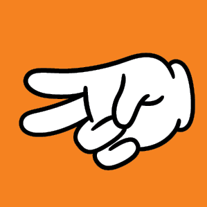

Ciekawe linki
KLASA 6
Lekcje z algorytmami - minimum, maksimum" - klasa 6
Scratch - Poszukaj minimum
Scratch - Zgadnij liczbę, gra zgadywanka
Scratch - kulki najmniejsza wartość
podstawowe pojęcia, 03:32 - najważniejsze pojęcia, 07:18 - jednostki danych stosowane w sieciach
Klasa 7
Scratch, gra - "Papier kamień nożyce"




historia sieci
Rodzaje licencji
Scratch klasa 7 - podstawowa gra
Programowanie w Scratchu. Euklides zakodowany.
Scratch - tabliczka mnożenia!
Klasa 8
Podstawy HTML
Zdjęcia